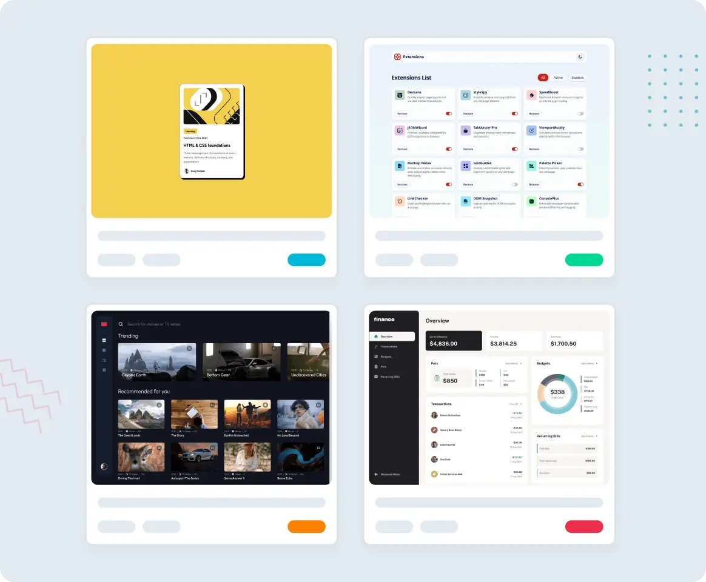
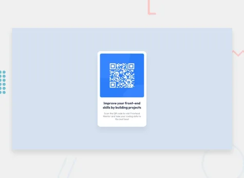
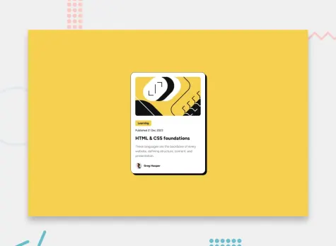
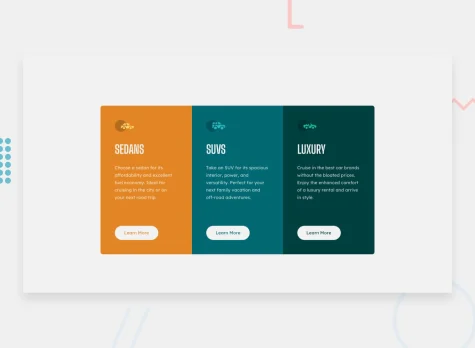
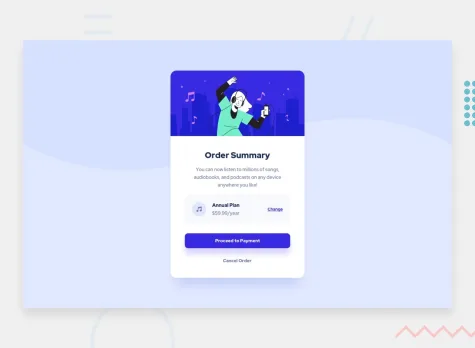
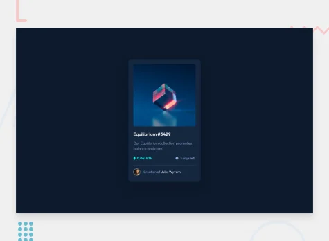
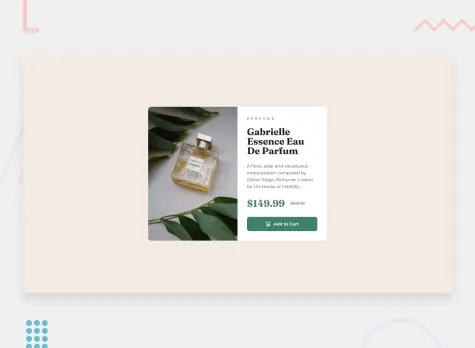
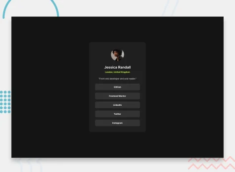
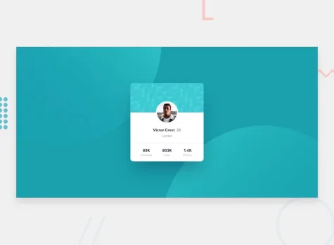

HTML & CSS projects for beginners
For beginners, small HTML and CSS projects are a great way to practice, see quick results, and build confidence. These mini projects help you learn structure and styling without feeling overwhelmed.
Join 1,196,145 developers building projects, reviewing code, and helping each other improve.

Build HTML & CSS projects that eliminate design paralysis
Frontend Mentor solves the most significant barrier for beginners: not knowing what to build. With 100+ professionally designed challenges complete with mockups, style guides, and assets, you focus on learning code instead of struggling with design decisions. Practice the real developer workflow, from design file to deployed website, while receiving feedback and support from our community.
How to start your first HTML & CSS project today
1
Pick a project below that matches your current
2
Build it from scratch don’t just copy paste code. Make it your own.
3
Push to GitHub and share your work
4
Iterate: Add features, refactor your code, try different approaches.
5
Want feedback? Submit your project for community review on Frontend Mentor.
Absolute beginner HTML & CSS projects
Start with single-component challenges that introduce one concept at a time. Build cards, buttons, and simple layouts while learning HTML structure and basic CSS styling. These micro-projects provide quick wins to maintain motivation while establishing fundamental skills through repetition and gradual increases in complexity.

QR code component
A perfect first challenge if you're new to HTML and CSS. The card layout doesn't shift, so it's ideal if you haven't learned about building responsive layouts yet.

Blog preview card
This HTML & CSS-only challenge is a perfect project for beginners getting up to speed with HTML and CSS fundamentals, like HTML structure and the box model.

3-column preview card component
This challenge is perfect if you're just getting started. The shift between the layouts will be a nice test if you're new to building responsive projects.

Order summary component
A perfect project for newbies who are starting to build confidence with layouts!

NFT preview card component
This HTML & CSS only challenge is perfect for anyone just starting out or anyone wanting a small project to play around with.

Product preview card component
This HTML & CSS-only challenge will be perfect for anyone starting to build responsive projects.

Social links profile
In this small project, you'll build out your social link-sharing profile. You can even personalize it and use it to share all your social profiles!

Profile card component
This is a perfect challenge to test your layout skills. The card layout doesn't shift, so it's also great for those that haven't dived into responsive websites yet! Simple HTML & CSS website project
Why Frontend Mentor for beginner HTML & CSS projects?
We’re not just another tutorial site. Our approach is proven to help developers build real skills that translate directly to job requirements.
A
Professional designs includedEvery completed project can be added to your portfolio with live demos and GitHub repos that impress recruiters.
B
Code reviews & feedbackGet constructive feedback from our community of 1,000,000+ developers. Learn best practices and improve your code quality.
C
Portfolio-ready projectsSkip the design phase and focus on coding. Every project comes with Figma files and style guides from professional designers.
Join 1,196,145 people building portfolio-worthy projects
Our highly supportive, positive community is here to help you improve your skills. We all try to help each other out wherever possible. We’d love to welcome you to our community!
Related pages
HTML & CSS projects
Practice HTML & CSS with professionally designed projects. Build responsive websites, solve real-world challenges, and get community feedback on your code.